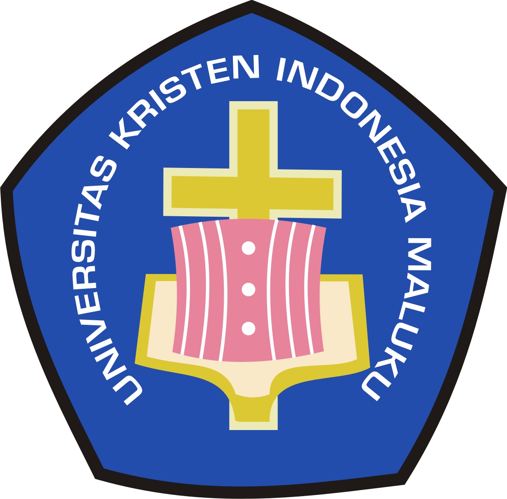

UKIMexpo 2019
Program Studi InformatikaVisi
Menjadi program studi berkualitas yang menghasilkan Sarjana Komputer berkompeten dan mandiri dalam bidang jaringan komputer (Network Engineering) dan pengembangan aplikasi perangkat lunak (Application Development) dilandasi iman dan kasih.Misi
- Melaksanakan pendidikan dan pengajaran di bidang informatika untuk menghasilkan lulusan yang memiliki kepribadian yang tangguh, percaya diri, dan cerdas, profesional, inspiratif dan inovatif.
- Melaksanakan dan mengembangkan penelitian serta mempublikasikan hasil penelitian di bidang informatika.
- Melaksanakan dan mengembangkan kegiatan pengabdian kepada masyarakat sesuai dengan kebutuhan sebagai bentuk pelayanan dan pemberdayaan bagi masyarakat berbasis kepulauan.
Struktur Website
Profile Lulusan
Profil lulusan dari Program Studi InformatikaApplication Developer
- Technopreneur
- IT Consultant
- Programmer
- Software & Database Engineer
- Data Scientist
- Web Developer
- System Analyst
- etc
Network Engineer
- Technopreneur
- IT Consultant
- Network & Security Engineer
- Network Penetration Tester
- Network Administrator
- etc
Proyek
Daftar Proyek-Proyek yang ada dalam UKIM Expo 2019- Pembuatan Film Pendek
- Pembuatan Video Scribble
- Pembuatan Gif (Gambar bergerak)
Ketentuan dan Pembuat


Program Studi Informatika
Pembuatan oleh Team Website UKIMexpo Prodi Informatika
Didukung oleh
- Universitas Kristen Indonesia Maluku
- Program Studi Teknik Informatika
- Badan Pengurus Mahasiswa Informatika